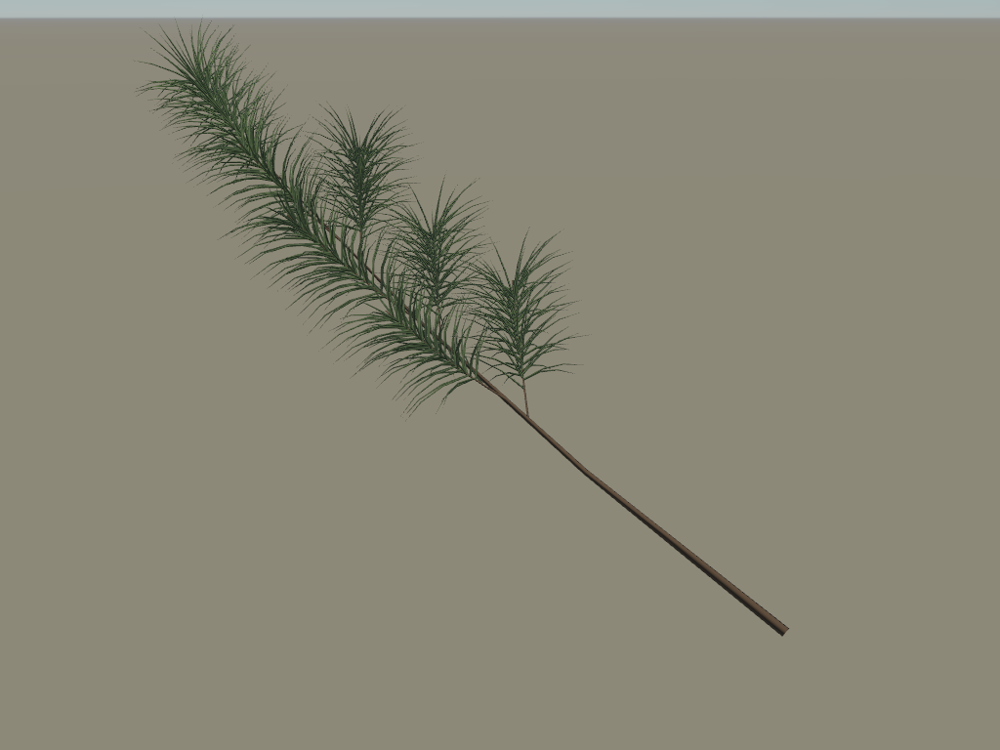
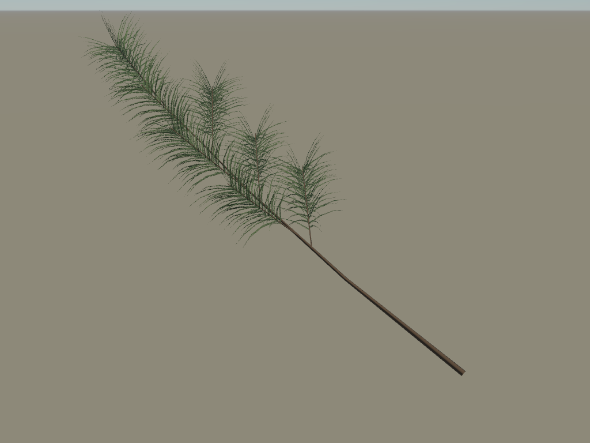
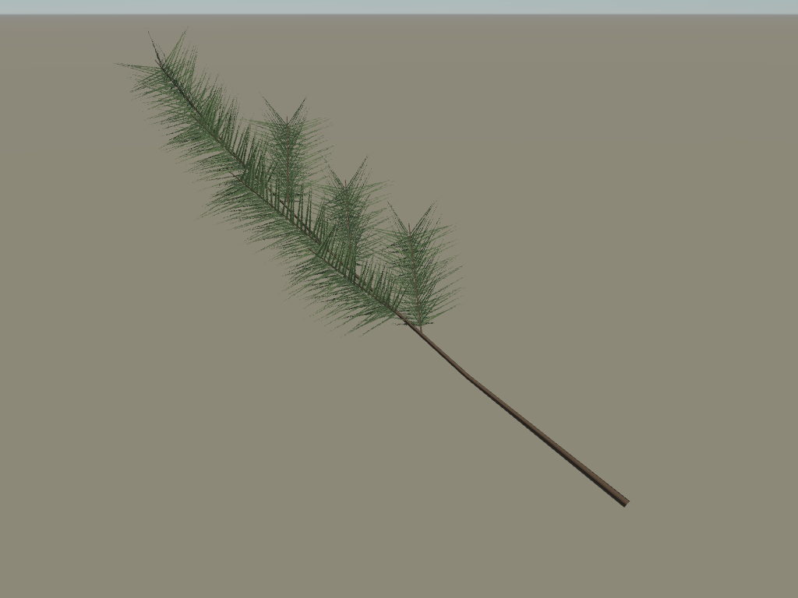
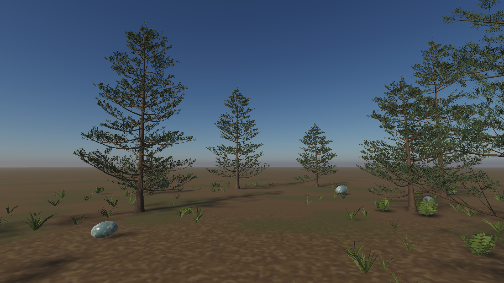

WRELA / FOLIAGE · 23 SEPTEMBER 2026
Better source structure.
Less repeated rendering work.
Canonical 3D needles now drive the shoot vocabulary, coverage fields and close-detail geometry. Shared geometry, independent camera and shadow detail, conservative culling, coherent wind and temporal history carry them into an editable forest review scene.
Implemented; visual acceptance remains open. The proxy still loses about 13% of source coverage in the tested views. These images and timings are evidence, not an AAA quality claim.
One branch, three representations

Explicit source · 11,649 triangles including wood. The close reference retains needle depth.
Source-derived projection · 186 triangles including wood. Better arrangement correspondence; depth and coverage still differ.
Earlier comb control · 186 triangles. Its needle population differs, so this is a historical visual control, not an exact-source error reference.Measured on ordinary hardware
| Native 1080p · M4 Air | Expanded shoots | Shared shoots |
|---|
| GPU p95 | 7.67–7.86 ms | 6.09–6.16 ms |
| CPU p95 | 1.7–1.8 ms | 1.8–1.9 ms |
| Resident GPU memory | 237.5 MiB | 218.2 MiB |
| Typical submitted triangles | 728,002 | 463,018 |
Frozen-source ABBA comparison, 1,200 identical measured ticks per run after 240 warmup ticks. Temporal reconstruction; no resolution reduction. This is a short diagnostic with approximate distant foliage, not a sustained qualification. The 6 ms GPU target is still missed.
Review at walking height

Native compositor capture after history warmup. The scene exposes crown tiers, undersides, ground attachment, wind and disocclusion. It remains a sparse look-development testbed. This capture precedes the final dull-stone and fern-authoring adjustment; the player shows the current source.
Open the forest review
What the new gate says
Area error is roughly 13%, versus the proposed 2% budget. Foreground-energy differences are 16–21%, versus 5%. Spatial reference sampling also needs more convergence. Keep the explicit close fallback, treat the projected path as an approximation, and test depth-preserving single-shoot alternatives before expanding crown aggregation.